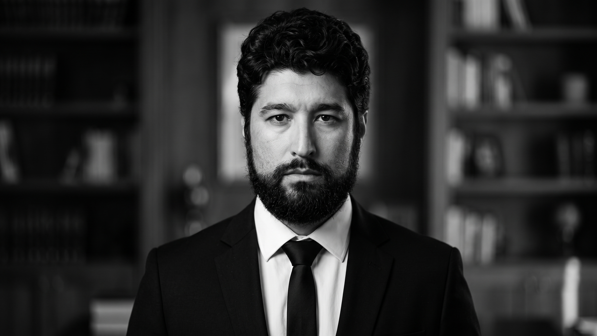

Itu, SP | brunocram@outlook.com | GitHub: https://github.com/Bcramattos

Desenvolvedor Back-End (Node.js, JavaScript, React / Automação e Integração de Sistemas)
Profissional com trajetória sólida em tecnologia, empreendedorismo e liderança técnica.
Experiência prática no desenvolvimento de sistemas internos, arquitetura de fluxos de automação, gerenciamento de dados e integração de APIs para otimização de processos operacionais e de comunicação.
Atualmente graduando em Análise e Desenvolvimento de Sistemas, buscando atuar como Desenvolvedor Back-End para aplicar competências em Node.js, JavaScript e automação de fluxos de negócios.
2026 – 2028 (Previsão) Tecnologia em Análise e Desenvolvimento de Sistemas
FATEC Itu – Faculdade de Tecnologia de Itu (2º Semestre)
Presente Sócio e Diretor de Tecnologia / Operações Técnicas
Corretora de Seguros Fotoseg
Desenvolvimento e implementação de sistemas internos para gestão, acompanhamento e análise de dados de clientes.
Criação de soluções automatizadas para monitoramento de cobranças e disparo de comunicações transacionais.
Liderança técnica na modernização de processos operacionais, reduzindo retrabalho e otimizando fluxos de atendimento.
BCram Films (Atuação Autônoma)
Gestão técnica e criação de conteúdo audiovisual para eventos sociais e corporativos.
Técnico Audiovisual e Cenografia
Produtora Apple
Atuação em edição de vídeo, tratamento de imagens e estrutura cenográfica para produções de alto padrão.
Suporte Técnico de TI e Atendimento ao Cliente
Montreal, (São Paulo/SP)
Atendimento e suporte a clientes com foco em diagnóstico e resolução de problemas técnicos.
Manutenção preventiva/corretiva em ambiente Windows e ajuste de sistemas operacionais.
Correção de instaladores de tecnologia VoIP e configurações de software.
Linguagens & Tecnologias: JavaScript, Node.js, React, C++
Backend & Automação: Desenvolvimento de sistemas internos, integração de APIs, webhooks, fluxos de automação (n8n), tratamento e estruturação de dados (Supabase)
Sistemas Operacionais & TI: Manutenção de sistemas Windows, infraestrutura VoIP, rotinas de banco de dados